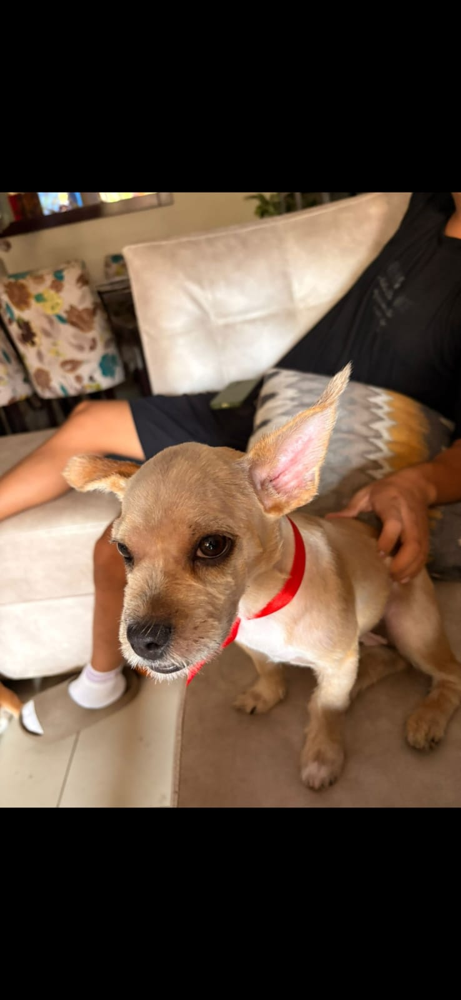
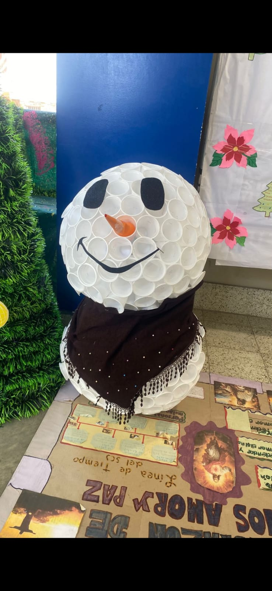
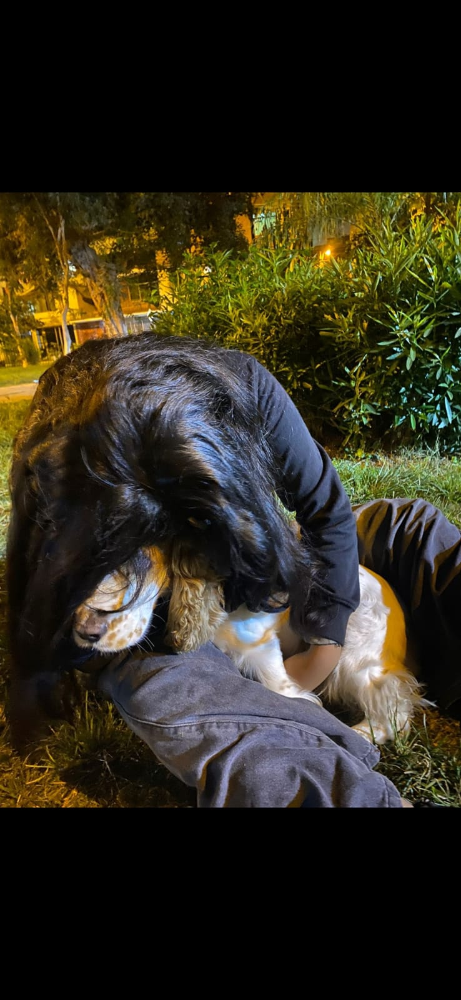
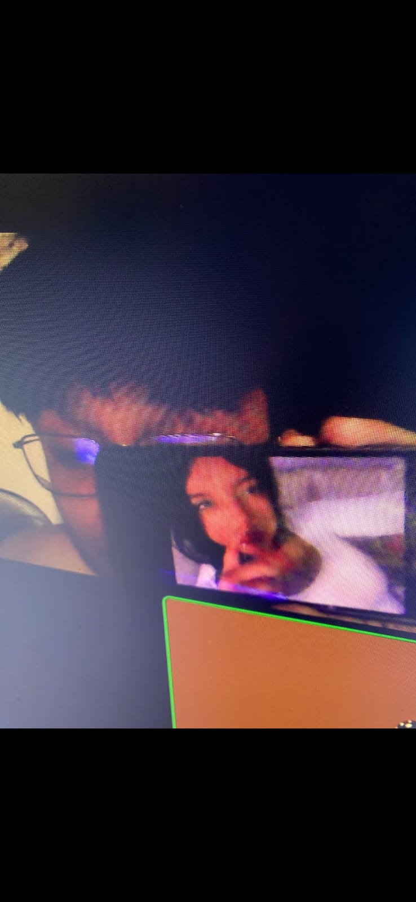
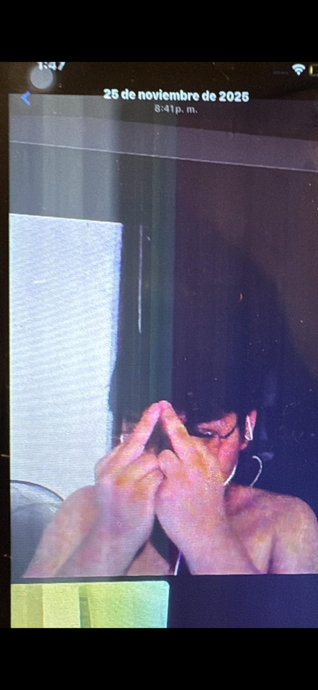
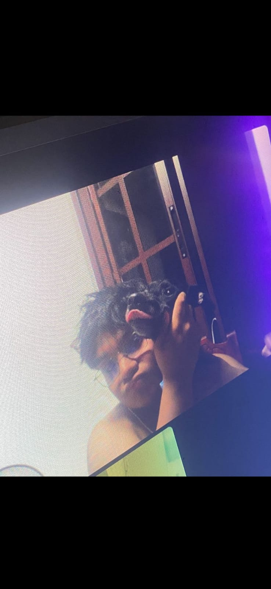
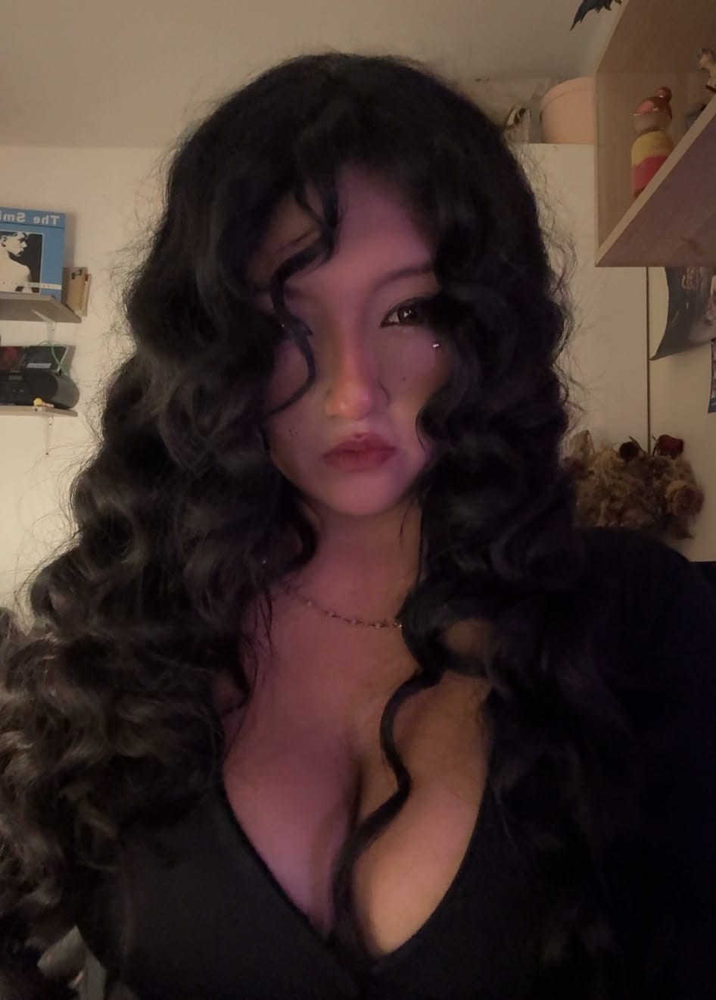
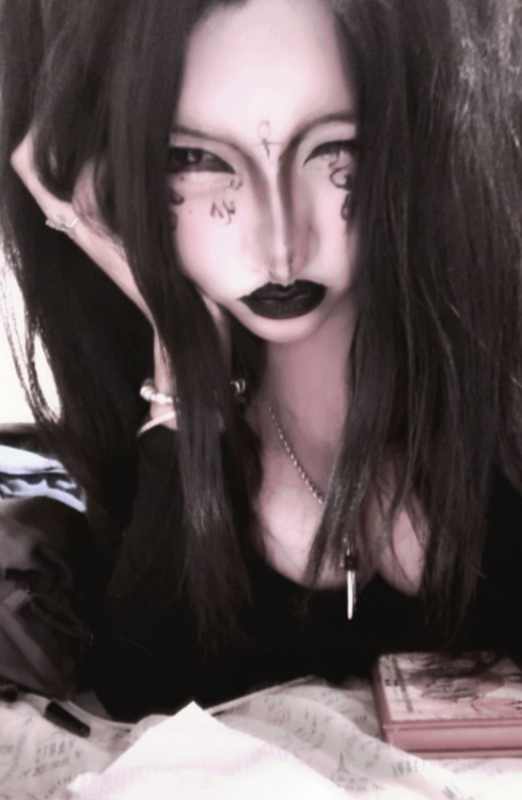

la primera vez q pelaron a chuscas JASJDKADK, q gracioso

CUANDO IBAMOS A LA ESCUELA Y HICISTE TU MUÑECO DE NIEVE AMOR

me encanta como abrazas a tommy, mi bebito lindo, los amo a los dos

aqui yo presumiendo a mi esposa

aqui una fotito de recuerdo jsjs, q gracioso amor

me gusto mucho esta foto que tomaste, me encanta la idea de que me tomas fotitos jsjs
te miras toda bonita, enserio eres tan adorable.
aca te miras jodidamente hermosa.

Cada foto que miro de ti es un motivo para siempre sonrier tonta mente jsjs
aqui mi princesa haciendose la distraida bien aestetik, mi hermosa bebe
aca te miras demasiado linda, ten linda mi bebe hermosa

Te amo, Luana ♡
Me gustaria poner mas fotitos, tuyas o de los dos, dios eres muy linda, espero te este gustando como va quedando todo, te amo demasiado mi bebe, te adoro cielo♡